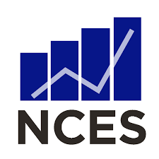

The fact that Title I grants are regularly abused is a well-documented problem. Many solutions have been proposed and implemented, such as the Basic Grant, Concentration Grant, Targeted Grant, and Eductation Finance Incentive Grant. These various grants are distributed based on different criteria, such as schools with large poverty rates, as well as grants given based on a school's state ranking. However, many school districts have been known to gerrymander and submit information and numbers that are not technically accurate. Because of this, the most impoversed schools in the country are not getting the adequate funding they require. Among this, schools with just a poverty rate of greater than 40% are eligible for Schoolwide Programs from Title I. Because of this, more than 50% of public schools have schoolwide programs from Title I. This means that there either need be stricter requirements for Title I grants, or simply more funding for Title I, which currently sits at $14 billion per year.
Our personal solution to this problem was to develop a web app that easily informs whether or not a school is eligible for Title I grants. We implemented Machine Learning for an easier classification of Title I schools. For our label, we used a proportion of free lunch eligible students, which itself is in need of adjustment. Data from the NCES in the last five years such as racial demographics, location, and average revenue were used in determining whether or not the school is Title I eligible. This will keep a more in check record of school information for grants, as well as determine exact facts needed for a prediction on whether or not the school is eligible.
Home